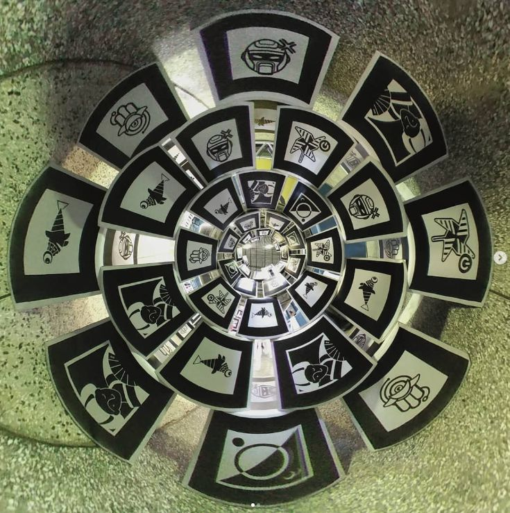

Talks
Twenty-four years of stages, VJ booths and workshops.
From free software and VJing to internationally awarded augmented reality.

Highlights
My work was also shown in France and Peru.
What I talk about
The 150+ talks and workshops fall into five themes. The events abroad are in the highlights above.
Full list
The 245 activities I could confirm with a source, from 2000 to 2026: talks, workshops, panels, VJ sets, exhibitions, residencies and the events I helped organize. Titles are in the language they were given in.
2026 9
- Oct 17diar.ia.br AI Immersion, cohort 2, online
Course: "Conteúdo Autêntico com IA" - Oct 10diar.ia.br AI Immersion, cohort 1, online
Course: "Crie seu primeiro agente de IA sem programar" - Jul 1X-Reality USP 2026, Academic Conference, São Paulo, SP
Talk: "X-Reality: Jandig e Mitologia Estendida" - Jun 30X-Reality USP 2026 (CTR-ECA), São Paulo, SP
Panel: opening panel - Jun 202ª Semana de Artes de Cataguases (AnimaParque), Cataguases, MG
Workshop: "Mitos em Movimento: Animação e Realidade Aumentada" - Jun 192ª Semana de Artes de Cataguases, Cataguases, MG
Exhibition: "Mitos em Movimento: Animação e Realidade Aumentada" - May 13São Paulo Innovation Week 2026 (FAAP, Palco 27), São Paulo, SP
Panel: "XR Futures: Games, Art, and the Expansion of Immersive Worlds" - Jan 30Mitologia Estendida (Coletivo Digital), São Paulo, SP
Workshop: "Oficina: Criação de Publicações Interativas em Realidade Estendida" - Jan 29Mitologia Estendida (Coletivo Digital), São Paulo, SP
Installation: mixed reality installation and AR sticker album
2025 2
- Nov 7Mozilla Festival 2025 (Poble Espanyol), Barcelona, Spain
Installation: "Jandig - Brazilian Myths in Mixed Reality" - Oct 24Mitologia Estendida na USP (CTR-ECA), São Paulo, SP
Presentation: playtest, demo and talk about the project
2024 4
- Sep 20X-Reality USP 2024 (USP), São Paulo, SP
Organization: scientific committee, executive team and making-of - Sep 20X-Reality USP 2024, São Paulo, SP
Panel: opening panel - Aug 26ExperimentAnima 2024 / V Mostra de Animação, UTFPR, Curitiba, PR
Exhibition: "Narrativa Territorial de Ouro Preto" - Aug 26ExperimentAnima 2024 / V Mostra de Animação, UTFPR, Curitiba, PR
Exhibition: "Narrativa Territorial - Centro de Belo Horizonte 2021"
2023 2
- SepSoundBITES podcast (Nanochomp), online
Interview: podcast episode - Aug 25LABmais, Sesc Jundiaí, Jundiaí, SP
Workshop: videocast production
2022 2
- Nov 17X-Reality USP 2022, São Paulo, SP
Organization: organizing committee, international curation and executive production - Nov 17X-Reality USP 2022, São Paulo, SP
Panel: opening panel
2021 4
- Mar 19X-Reality USP 2021, online
Organization: organizing committee and curation - Mar 19X-Reality USP 2021, online
Panel: opening panel - MarFestival Marte 2021, online
Curation: showcase of 360° music videos - MarMozFest 2021, online
Exhibition: "Connected - Global AR Exhibition"
2020 7
- Dec 7Ciclo de Gestão Cultural 2020 (Oficinas Culturais SP), online
Discussion: webinar "Arte, Cultura e Tecnologia" - Nov 28Festival Amazônia Mapping 2020, online
Workshop: "Da Realidade Aumentada à Projeção Mapeada" - Nov 18PUC Minas, Belo Horizonte, MG or online
Talk: seminar on the VUCA world and my career - NovProAC Expresso LAB 57/2020 (games, VR and AR), online
Jury: selection committee - Sep 19Festival Criativar, online
Panel: "Audiovisual Expandido" - Sep 18Exhibition "Caipirismo - José Antônio da Silva e Jocelino Soares" (Sesc Bom Retiro), São Paulo, SP and online
Exhibition: digital tour of the exhibition - FebCarnaval 4.0, Rosas de Ouro (Sambódromo do Anhembi), São Paulo, SP
Exhibition: Jandig augmented reality in the parade
2019 11
- Aug 27Garota Hacker (Jandig and Lá da Favelinha), Belo Horizonte, MG
Course: "Formação em Realidade Aumentada" - AugGarota Hacker (studio and FUMEC), Belo Horizonte, MG
Course: augmented reality course "Rejunte" - Jul 25Festival Marte 2019, Ouro Preto, MG
Exhibition: "Narrativa Territorial - Ouro Preto" - Jul 25MARTE Festival 2019, 2ª edição (Praça Tiradentes), Ouro Preto, MG
Installation: "Instalação artística tecnológica - Virtual - Jandig por Vj Pixel" - Jun 29X-Reality USP 2019 (EBAC e ECA-USP), São Paulo, SP
Organization: creation, organizing committee, scientific committee and technical production - Jun 29X-Reality USP 2019 (EBAC e ECA-USP), São Paulo, SP
Panel: opening panel - Jun 2Festival Path 2019 (Maksoud Plaza), São Paulo, SP
Panel: "A hora da XR (Extended Reality)" - JunOpening of Sesc Guarulhos, Guarulhos, SP
Exhibition: "Vida Longa à Jandig!" - Apr 16Sesc Pompéia, São Paulo, SP
Course: "Produção de Vídeo Imersivo (360)" - Mar 29Circuito Sesc de Artes 2019, Nine stops in São Paulo state
Workshop: "Oficina de Jandig - arte em realidade aumentada" - Mar 29Circuito Sesc de Artes 2019, Nine stops in São Paulo state
Exhibition: "Jandig - Arte em Realidade Aumentada"
2018 13
- Oct 27MozFest 2018, Decentralisation Space (Ravensbourne), London, UK
Session: "Jandig - augmented reality exhibition" - Oct 27MozFest 2018, MOSS Awards Speed Dating, London, UK
Pitch: "Jandig" - Oct 10GOSH 2018, Gathering for Open Science Hardware, Shenzhen, China
Talk: Rede InfoAmazonia - Oct 9Experimenta! Comida, Saúde e Cultura (Sesc Avenida Paulista), São Paulo, SP
Installation: "Na Pressão!" - Oct 426th Raindance Film Festival, Raindance Immersive Stories (Gallery of Immersive Stories), London, UK
Collaboration: support for the VR showcase - OctSesc Pompéia, São Paulo, SP
Installation: "Janelas para o Passado" - OctGOSH 2018, Gathering for Open Science Hardware, Shenzhen, China
VJ set: my last VJ performance - Sep 5Sesc Pompéia, São Paulo, SP
Course: "Produção de Vídeo Imersivo" - May 19Virada Cultural 2018 (Chácara do Jockey), São Paulo, SP
Installation: "VideoPong" - May 19Virada Cultural 2018 (Chácara do Jockey), São Paulo, SP
Installation: "Pac-Man Motion" - Apr 29Sesc Interlagos, São Paulo, SP
Workshop: "Mapeamento Aéreo Participativo" - Mar 4FestA! Festival de Aprender (Sesc Osasco), Osasco, SP
Workshop: "Arte em QR Code" - JanArtist residency #plural (memeLab and PlanoP), Goiânia, GO
Organization: organization and selection of the 360° video dance residency
2017 6
- Dec 16Sesc Osasco, Osasco, SP
Workshop: "Brincando de VJing" - Oct 2ZU-UK (GAS Station), London, UK
Performance: "Goodnight, Sleep Tight" - OctZU-UK (TAG, Concordia), Montreal, Canada
Performance: "Goodnight, Sleep Tight" - May 20Virada Cultural 2017 (Sesc Belenzinho), São Paulo, SP
Exhibition: Jandig exhibition, Japan theme - MayVirada Cultural 2017 (Sesc Belenzinho), São Paulo, SP
Installation: "Pac-Man Gigante" - Apr 20Coletivo Digital, São Paulo, SP
Exhibition: "Janelas Digitais"
2016 4
- OctBarcu / AltCity (ZU-UK), Bogotá, Colombia
Performance: "Goodnight, Sleep Tight" - Aug 24Taller Observatorio Regional de Áreas Protegidas del Bioma Amazónico (Proyecto SNACC, Redparques, WWF), Lima, Peru
Presentation: platform of the Observatory of Protected Areas and Climate - Jun 25Economies of Experience 2016 (EoE16), "What Makes the Perfect Lab?" (GAS Station), London, UK
Organization: co-host of the conference on lab and residency models - May 25GAS Station (ZU-UK), London, UK
Residency: lab "Dinner Date", with ZU-UK and TAG Montréal
2015 10
- Dec 10Red Bull Basement (Red Bull Station), São Paulo, SP
Presentation: final presentation of the residency - Nov 20Public Lab, 5th Annual Barnraising, Cocodrie, Louisiana, USA
Presentation: opening of the theme "Building networks across regions" - Oct 27Red Bull Basement, Open Day (Red Bull Station), São Paulo, SP
Presentation: public presentation by the residents - SepRed Bull Basement, 1ª turma (Red Bull Station), São Paulo, SP
Residency: pilot of an environmental monitoring network, "Código Urbano" - Jul 25DRIFT Internacional (ZU-UK), Miguel Pereira, RJ
Residency: "Criaturas Afetivas – Experiência #1" - May 29First anniversary of the Google Impact Challenge Brazil (Google office), São Paulo, SP
Presentation: Rede InfoAmazonia, one year on - May 14Pragatecno, "Música eletrônica: de onde viemos para onde vamos?" (Espaço Lalá, Rio Vermelho), Salvador, BA
VJ set: VJ sets and coordination of the video showcases - Apr 14Oi Kabum, Salvador, BA
Workshop: "Chronica Mobilis" - Apr 13Oi Kabum, Salvador, BA
Talk: "Chronica Mobilis na Oi Kabum" - Jan 22Festival de Verão Salvador 2015 (palco Sensações), Salvador, BA
VJ set
2014 13
- OctHangar, Barcelona, Spain
Residency: "Chronica Mobilis" - Aug 19Oficinas de Video Mapping (OVM) Bahia (Frida Projetos Culturais, Secult BA), Salvador, BA
Workshop: projection mapping, with a closing showcase - AugOficinas de Video Mapping (OVM) Bahia, Ilhéus (Secretaria de Cultura de Ilhéus), Ilhéus, BA
Workshop: projection mapping - May 7FISL 15, Porto Alegre, RS
Talk: "Criação e remix online de mapas usando Mapas Coletivos" - MayFISL 15, Porto Alegre, RS
Talk: "Raul Hacker Clube – o início de um hackerspace" - Apr 28Environmental Journalists Network Meeting (Google), San Francisco and Berkeley, USA
Workshop: "DustDuino" - Febb_arco (Galeria Virgílio), São Paulo, SP
Exhibition: "Beberibe", group installation - Jan 30Campus Party Brasil 2014, São Paulo, SP
Workshop: "Usando Jeo para criar sua plataforma de mapas" - Jan 9Zona Mundi (Caatinga Cultura e Entretenimento), Salvador, BA
VJ set - JanCampus Party Brasil 2014, São Paulo, SP
Moderation: "Jornalista precisa saber código?" - JanCampus Party Brasil 2014, São Paulo, SP
Moderation: "O futuro dos portais brasileiros" - JanCampus Party Brasil 2014, São Paulo, SP
Moderation: "Novos equipamentos: drones, sensores, wearables como google glass, celulares" - JanCampus Party Brasil 2014, São Paulo, SP
Talk: "Hubs Criativos - 1º Encontro das Casas de Cultura Digital do Brasil"
2013 20
- DecOficina para a Inclusão Digital 2013, Brasília, DF
Workshop: "Usando Jeo para criar sua plataforma de mapas" - Oct 21Desafios Contemporâneos, Funarte (Teatro Vila Velha), Salvador, BA
Workshop: "Arte+Tecnologia" - SepVivacidade, São Paulo, SP
Exhibition: "Mimesis" - Aug 30Hacks/Hackers Buenos Aires Media Party 2013, Buenos Aires, Argentina
Workshop: "Using Jeo to create your own mapping platform" - Aug 29Hacks/Hackers Buenos Aires Media Party 2013, Buenos Aires, Argentina
Keynote: "The EcoLab, bringing innovation to environmental reporting" - Aug 29Hacks/Hackers Buenos Aires Media Party 2013, Media Feria, Buenos Aires, Argentina
Presentation: InfoAmazonia and Jeo stand at the Media Feria - JulFISL 14, Porto Alegre, RS
Talk: "Incubadora – Interação no teatro mediada por Software Livre" - JulFISL 14, Porto Alegre, RS
Workshop: "Video mapping" - JulFISL 14, Porto Alegre, RS
Installation: "Memórias", projection mapping - JunCircuito Sesc de Artes 2013, Nine cities in São Paulo state
Installation: "Surfluz" - May 24TEDx Salvador (ACBEU), Salvador, BA
Talk: "Redescobrindo Games" - May 24TEDx Salvador (ACBEU), Salvador, BA
Installation: "VideoPong" - May 13Oficinas de Video Mapping, Rede Nacional Funarte Artes Visuais 9ª ed. (Fotoativa), Belém, PA
Workshop: "Projection Mapping" - MayOficinas de Video Mapping, Rede Nacional Funarte Artes Visuais 9ª ed. (Travessa da Imagem), Fortaleza, CE
Workshop: "Projection Mapping" - MayVirada Cultural 2013, São Paulo, SP
Installation: "VideoPong" - MayVirada Cultural 2013, São Paulo, SP
Installation: "Pac-Man Motion" - MarOficinas de Video Mapping, Rede Nacional Funarte Artes Visuais 9ª ed. (Ideia Ambiental e Cultural), Goiânia, GO
Workshop: "Projection Mapping" - FebCampus Party Brasil 2013, São Paulo, SP
Discussion: "Arte, tecnociência e educação: Propostas de modelos de Medialabs / Hacklabs" - FebCampus Party Brasil 2013, São Paulo, SP
Moderation: "Bate-Papo Empreendedores Criativos: Professor Pardal" - FebOficinas de Video Mapping, Rede Nacional Funarte Artes Visuais 9ª ed. (Barraco Estúdio), Porto Alegre, RS
Workshop: "Projection Mapping"
2012 37
- Nov 7Sesc Santana, Hard users: software e sensibilidade, São Paulo, SP
Residency: lab of technology experiments - NovVídeo Guerrilha, São Paulo, SP
Installation: "VideoPong" - NovSesc Santana, São Paulo, SP
Exhibition: "Criaturas Afetivas – Experiência #1" - Oct 13Festa do Vinil (Sesc Ipiranga), São Paulo, SP
VJ set - Sep 26Ciclo Realidade Aumentada, Sesc Sorocaba, Sorocaba, SP
Workshop: "Mapeamento em realidade aumentada" - Sep 12Ciclo Realidade Aumentada, Sesc Sorocaba, Sorocaba, SP
Workshop: "Introdução à realidade aumentada" - Sep 10Ciclo Realidade Aumentada, Casa da Cultura Digital, São Paulo, SP
Talk: "Realidade Aumentada" - Sep 10Ciclo Realidade Aumentada, Casa da Cultura Digital, São Paulo, SP
Workshop: "Introdução à Realidade Aumentada" - Sep 1Opening of Sesc Sorocaba, Sorocaba, SP
Installation: "VideoPong" - Sep 1Opening of Sesc Sorocaba, Sorocaba, SP
Exhibition: "Algo a Mais? - Jandig" - SepCiclo Realidade Aumentada, Sesc Sorocaba, Sorocaba, SP
Talk: "Realidade Aumentada" - SepCiclo Realidade Aumentada, Sesc Sorocaba, Sorocaba, SP
Workshop: "Usando um Kinect para fazer seu próprio game" - SepSesc Sorocaba, Experimentações Eletro-Orgânicas, Sorocaba, SP
Residency: lab on interaction between people and plants - SepOpening of Sesc Sorocaba, Sorocaba, SP
Exhibition: "Experimentações Eletro-Orgânicas" - Aug 30Estéticas das Periferias (Sesc), São Paulo, SP
Discussion: "Arte digital: o centro está em toda parte" - Jul 26FISL 13 (2012), Porto Alegre, RS
Discussion: "Cidades Copyleft" - JulFISL 13 (2012), Porto Alegre, RS
Talk: "Jandig – arte em realidade aumentada" - JulFISL 13 (2012), Porto Alegre, RS
Exhibition: "Jandig" - Jun 1Circuito Vivo arte.mov (Paço das Artes, USP), São Paulo, SP
Discussion: "Narrativas na Cidade: realidade aumentada compartilhada" - JunTeatro Vila Velha, play "O Olho de Deus é o Avesso dos Retalhos", Salvador, BA
Technology direction: video capture and projection mapping - May 31Circuito Vivo Arte.mov (Paço das Artes), São Paulo, SP
Exhibition: "Narrative Navigation" - Apr 27Insper, São Paulo, SP
Workshop - Apr 21Dorkbot, Salvador, BA
Talk: "Narrative Navigation" - Apr 20Centro Cultural São Paulo, São Paulo, SP
Workshop: collaborative writing session for Narrative Navigation - AprLabmovel (Praça Dom José Gaspar), São Paulo, SP
Talk: "Narrative Navigation" - AprLabmovel (Praça Dom José Gaspar), São Paulo, SP
Exhibition: "Narrative Navigation" - AprLabmovel (Praça Dom José Gaspar), São Paulo, SP
Exhibition: "Jandig" - AprLabmovel (Centro Cultural São Paulo), São Paulo, SP
Talk: "Narrative Navigation" - AprLabmovel (Centro Cultural São Paulo), São Paulo, SP
Exhibition: "Narrative Navigation" - MarNIMk, Nederlands Instituut voor Mediakunst, Amsterdam, Netherlands
Talk: "Narrative navigation" - MarBaixo Centro, São Paulo, SP
Exhibition: "Jandig" - Feb 9Campus Party Brasil 5, São Paulo, SP
Talk: "Jandig" - Feb 9Campus Party Brasil 5, São Paulo, SP
Talk: "Vjing em Software Livre" - FebCampus Party Brasil 5 (Campus Futuro), São Paulo, SP
Exhibition: "Jandig" - JanConexões Globais 2.0, Porto Alegre, RS
Workshop: "Seja um VJ livre!" - JanDigitalia, Salvador, BA
Installation: "Surfluz" - JanNIMk / Vivo arte.mov, Residência BR/NL (Labmovel), Amsterdam, Netherlands and São Paulo, SP
Residency: "Narrative Navigation"
2011 16
- DecÔnibus Hacker, São Paulo, SP and Rio de Janeiro, RJ
Exhibition: "Jandig" - DecFestival CulturaDigital.Br (MAM Rio), Rio de Janeiro, RJ
Exhibition: "Jandig" - Nov 7Plug Minas, NAP (Núcleo de Apoio ao Professor), Belo Horizonte, MG
Workshop: "Realidade aumentada na educação" - NovSamba na Casa do Gato, São Paulo, SP
Installation: "VideoPong" - OctCEMEC, Empreendedores Criativos, São Paulo, SP
Residency: project "memeLab" - SepTeatro Vila Velha, Salvador, BA
Workshop: "Streaming de vídeo" - Aug 17Faculdade Cásper Líbero, V Semana do Audiovisual, São Paulo, SP
Talk: "Do Broadcast ao Broadband" - AugII Seminário de Literacia Midiática, São Paulo, SP
Panel: "Pesquisa Vídeo Livre no Brasil: Produtores e Desafios" - AugPUC-SP, Curso de Design Informacional, São Paulo, SP
Guest lecture: "Interfaces Interativas" - JulFISL 12, Mostra do Vídeo Livre 2011, Porto Alegre, RS
Curation: coordination of the Mostra do Vídeo Livre - MayNave, Recife, PE
Workshop: "Video Mapping" - Apr7ª Virada Cultural (Sesc Belenzinho), São Paulo, SP
Installation: "Photolink", a mosaic of 24 projectors - Mar 22UFRB, I Semana da Pesquisa de Cinema e Audiovisual, Cachoeira, BA
Workshop: "Vídeo Livre" - Mar 12Oficina de Streaming CCE, São Paulo, SP
Workshop: "Oficina de Streaming" - FebTuring Clube, Garoa Hacker Clube, São Paulo, SP
Discussion: "Plataformas de Vídeo Livre" - Jan 22Campus Party Brasil 2011, São Paulo, SP
Talk: "VJing"
2010 22
- Nov 16II Fórum da Cultura Digital Brasileira (Cinemateca Brasileira), São Paulo, SP
Talk: "Pesquisa Vídeo Livre no Brasil" - Nov 8Festival Conexões Tecnológicas (Instituto Sergio Motta), São Paulo, SP
Jury: selection for the VJ tournament - Oct 2Open Video Conference 2010, New York, USA
Talk: "Open Video in Brazil" - Sep 15O Empreendedor Audiovisual no Mercado Globalizado, Mídias Digitais (Cine Glória), Rio de Janeiro, RJ
Talk: "HTML5 e a evolução multimídia" - SepFórum da Cultura Digital Brasileira 2010 (MinC), São Paulo, SP
Organization: coordination of technology and live streaming - Aug 26Broadcast & Cable (Senac stand), São Paulo, SP
Talk: "Software Livre" - Jul 27VI SEMCINE (ICBA), Salvador, BA
Talk: "Produção multimídia" - Jul 22FISL 11, Porto Alegre, RS
Talk: "Apresentando a Vimax – Plataforma Livre para Vídeos" - JulSeminário Interfaces Digitais Colaborativas, ECO-UFRJ, Rio de Janeiro, RJ
Discussion: "Plataformas Digitais" - JulFISL 11, Porto Alegre, RS
Talk: "Cervo + Plataforma de Vídeo" - JulFISL 11, Porto Alegre, RS
Discussion: "Fundação da Aliança do Vídeo Livre" - Jun9ª Oficina para Inclusão Digital (OID), Brasília, DF
Talk: "Vídeo Livre" - May 31Rede iVoz, IPTV workshops
Workshop: streaming and IPTV - Apr 6O Empreendedor Audiovisual no Mercado Globalizado (SIAESP), módulo Mídias Digitais, São Paulo, SP
Talk: "Produção multimídia" - AprFISL, Mostra do Vídeo Livre 2010, Porto Alegre, RS
Curation: coordination of the Mostra do Vídeo Livre - MarCampamento Latinoamericano de Jóvenes Activistas Sociales (JAS10, Open Society Institute e Fundación SES), Montevideo, Uruguay
Talk: "Vídeo livre" - FebBrazilian launch of the film "10 Tactics to Turn Information Into Action", São Paulo, SP
Discussion: "Infoativismo" - FebBrazilian launch of the film "10 Tactics to Turn Information Into Action", São Paulo, SP
Organization: organizing the launch - Jan 30Campus Party Brasil 2010, São Paulo, SP
Workshop: "VJing" - JanCampus Party Brasil 2010, São Paulo, SP
Discussion: "Open Video" - JanCampus Party Brasil 2010, São Paulo, SP
Organization: coordination of the Video area - JanSimpósio Internacional de Políticas Públicas para Acervos Digitais (MinC)
Curation: video curation
2009 14
- DecPUC-SP, Curso de Design Informacional, São Paulo, SP
Guest lecture: "Interfaces Interativas" - NovFórum da Cultura Digital Brasileira 2009, São Paulo, SP
Discussion: "Roda de conversa sobre vídeo livre" - OctCibercultura 10+10, Santos, SP
Workshop: "Remix de vídeo ao vivo" - OctCibercultura 10+10, Santos, SP
Organization: coordination of technology and live streaming - OctSeminário Internacional do Fórum da Cultura Digital Brasileira (MinC), São Paulo, SP
Organization: coordination of the online video platform and live streaming - AugCONSEGI 2009, Brasília, DF
Workshop: "Interfaces e interatividade" - AugCONSEGI 2009, Brasília, DF
Workshop: "Edição de vídeos com LiVES" - AugCONSEGI 2009, Brasília, DF
Installation: "VideoPong" - JunFISL 10, Porto Alegre, RS
Discussion: "Open Video Alliance" - JunOpen Video Conference 2009, New York, USA
Discussion: discussions, representing Brazil and the LiVES project - Apr 29Coletivo Digital, São Paulo, SP
Discussion: "Cultura livre e novas formas de proteção autoral" - FebInfo-Activism Camp (Tactical Tech), Bangalore, India
Workshop: "Video editing" - FebInfo-Activism Camp (Tactical Tech), Bangalore, India
Workshop: "Compressing and encoding" - JanCampus Party Brasil 2009, São Paulo, SP
Workshop: "Laboratório de novas interfaces"
2008 3
- AugCONSEGI 2008, Brasília, DF
Workshop: "Streaming de vídeo com software livre" - AprFISL 9, Porto Alegre, RS
Workshop: "Panorama do vídeo em Software Livre" - AprFISL 9, Porto Alegre, RS
Organization: collaboration on the Arena Arte Livre
2007 10
- NovTeia 2007, Belo Horizonte, MG
Workshop: "MetaReciclagem" - NovLatinoware 2007 (IV Conferência Latinoamericana de Software Livre), Foz do Iguaçu, PR
Talk: "MetaReciclagem" - Nov6ª Oficina para Inclusão Digital, Salvador, BA
Workshop: "MetaReciclagem" - OctSemana Ginga Brasil, Brasília, DF
Workshop: "Produção de conteúdo para TV digital" - SepFestival Calango de Artes Integradas, Cuiabá, MT
Discussion: "Software livre e música independente" - JunECCO, Encontro de Cultura Colaborativa, Salvador, BA
Talk: "Produção multimídia em softwares livres" - AprFISL 8, Porto Alegre, RS
Discussion: "Edição de vídeo em software livre, em que pé estamos? Pra onde vamos?" - Jan5ª Bienal de Arte, Ciência e Cultura da UNE, Rio de Janeiro, RJ
Discussion: "Inclusão digital e tecnologia na educação" - JanFISL 8, TV Criei, Tive Como!, Porto Alegre, RS
VJ set - JanFISL 8, TV Criei, Tive Como!, Porto Alegre, RS
Organization: coordination of TV Criei, Tive Como!
2006 13
- NovLatinoware 2006 (III Conferência Latinoamericana de Software Livre), Foz do Iguaçu, PR
Talk: "Enlightenment DR17" - NovLatinoware 2006 (III Conferência Latinoamericana de Software Livre), Foz do Iguaçu, PR
Talk: "Projeto Casa Brasil" - NovLatinoware 2006 (III Conferência Latinoamericana de Software Livre), Foz do Iguaçu, PR
Talk: "LiVES" - Oct3º Encontro Mineiro de Software Livre, Ouro Preto, MG
Talk: "MetaReciclagem" - Oct3º Encontro Mineiro de Software Livre, Ouro Preto, MG
Talk: "Projeto Casa Brasil" - Oct3º Encontro Mineiro de Software Livre, Ouro Preto, MG
Talk: "Estúdio Livre" - Oct3º Encontro Mineiro de Software Livre, Ouro Preto, MG
Talk: "LiVES" - Oct3º Fórum Goiano de Software Livre, Goiânia, GO
Workshop: "MetaReciclagem" - AugIII Festival Software Livre da Bahia, Salvador, BA
Talk: "Projeto Casa Brasil" - JulCâmara Municipal de Salvador, Salvador, BA
Discussion: "Inclusão digital" - JulFesta Social de Fazenda Coutos, Salvador, BA
Workshop: "MetaReciclagem" - FebCarnaval Revolução, Belo Horizonte, MG
Talk: "Estúdio Livre" - FebFISL, Festival Criei, Tive Como!, Porto Alegre, RS
VJ set: VJ set and festival organizing
2005 7
- NovEncontro de Conhecimentos Livres dos Pontos de Cultura do Centro-Oeste, Brazlândia, DF
Workshop: "Edição de vídeo em softwares livres" - AugEncontro de Pontos de Cultura do Nordeste, Aracaju, SE
Workshop: "Edição de vídeo em softwares livres" - MarII Festival Software Livre da Bahia, Salvador, BA
Talk: "Cultura digital nos Pontos de Cultura" - FebCarnaval Revolução, Belo Horizonte, MG
Talk: "Produção multimídia em softwares livres" - JanCaravana da Comunicação, Vitória, Rio de Janeiro, São Paulo, Florianópolis, Curitiba and Porto Alegre
Talk: "Produção multimídia em softwares livres" - JanCaravana da Comunicação, Vitória, Rio de Janeiro, São Paulo, Florianópolis, Curitiba and Porto Alegre
Organization: executive production - JanFórum Social Mundial, Porto Alegre, RS
Talk: "Produção multimídia em softwares livres"
2004 8
- NovResfest, São Paulo, SP
Talk: "Produção multimídia em softwares livres" - OctVJBR I (MIS), São Paulo, SP
Talk: "VJing com softwares livres" - SepSESC Pompéia, São Paulo, SP
Workshop: "Tribo Wiki" - AugFaculdade Ruy Barbosa, Salvador, BA
Talk: "Software Livre" - AugDigitofagia
Organization: coordination - AugVJBR I, Encontro Brasileiro de Visual Jockeys, São Paulo, SP
Organization: production coordination, as founder of the VJBR network - JunV FISL, lançamento do Creative Commons Brasil, Porto Alegre, RS
VJ set: VJ at Gilberto Gil's concert - FebFaculdade Ruy Barbosa, Salvador, BA
Talk: "Software Livre"
2003 3
- OctI Festival GNU/Linux de Salvador, Salvador, BA
Talk: "Produção multimídia em softwares livres" - OctMercado Cultural
Organization: IT coordination - MayImagens Sonoras, Instituto Cultural Brasil-Alemanha, Salvador, BA
Discussion: "A estética das imagens em ambientes de música eletrônica"
2002 1
- SepV Seminários Integrados, Faculdade Ruy Barbosa, Salvador, BA
Talk: "Softwares para video jockeying"
2001 1
- NovMercado Cultural
Organization: production assistant
2000 3
- DecMercado Cultural
Organization: production intern - DecIII Festival de Cinema Pan-Africano
Organization: production assistant - NovXXVII Jornada de Cinema da Bahia
Organization: production intern
Field notes

A 360° circular installation covered in AR markers

Carnival: an AR intervention in the Rosas de Ouro parade

Urban intervention in Ouro Preto (Territorial Narratives)

Jandig's traveling exhibit at a SESC cultural center

Kids playing with AR marker cubes at a traveling workshop

Remexe collection: upcycled clothing tagged with AR markers

A talk on stage at Campus Party

Silkscreen workshop printing Jandig's visual identity